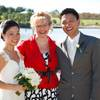
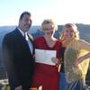

Laurel-Anne Kenny-Levick JP
Civil Marriage Celebrant, NSW
Thoughts, thank you's and comments ....
Kylene and Corey - L'Aqua Cockle Bay...these kind words posted to my FB page...Dearest Laurel, Corey and I would like to thank you so very much for paying such an amazing role and for officiating our marriage. We couldn't have been happier to have such a lively, funny and caring celebrant. You were fantastic and we loved that you got to know us and added so many personal touches to our ceremony. Many thanks and lots of love, the new Mr and Mrs Darmanin.
Steph and Cameron - Lilianfels Katoomba - You made our day just perfect!
 Sarah and Andrew Jones welcomed baby number two into their family with a naming day for daughter Scarlett Paige Jones. I received this email from Mum Sarah: Hi Laurel, Thank you so very much for being at our naming day ceremony for Scarlett you really did make it a very special occassion for us. See you at the next Naming Day ;-) Much love Sarah.
Sarah and Andrew Jones welcomed baby number two into their family with a naming day for daughter Scarlett Paige Jones. I received this email from Mum Sarah: Hi Laurel, Thank you so very much for being at our naming day ceremony for Scarlett you really did make it a very special occassion for us. See you at the next Naming Day ;-) Much love Sarah.
 Nicole and John, married at Yarramundi House sent this reference to Easy Weddings - "Laurel was the perfect celebrant! Fun but professional - I felt extremely confident in her abilities to handle anything that happened on the day. She was wonderful - a great celebrant and a lovely person. So many little touches really set her service out from the rest. Highly recommended."
Nicole and John, married at Yarramundi House sent this reference to Easy Weddings - "Laurel was the perfect celebrant! Fun but professional - I felt extremely confident in her abilities to handle anything that happened on the day. She was wonderful - a great celebrant and a lovely person. So many little touches really set her service out from the rest. Highly recommended."
 Karlee and Jason, married in the Royal Botanical Gardens, Sydney (on Sydney Harbour) Before we fly off on our five week honeymoon to Italy, France, Spain and Malaysia, we wanted to take a quick moment to say thank you!
Karlee and Jason, married in the Royal Botanical Gardens, Sydney (on Sydney Harbour) Before we fly off on our five week honeymoon to Italy, France, Spain and Malaysia, we wanted to take a quick moment to say thank you!
Thank you for all of your help over the past year as we have gone back and forth to finalise our ceremony arrangements. Thank you for all of your kind words and support along the way. Thank you for being so accommodating and ensuring that all of our dreams turned into a reality. Thank you for making this day the best day of our life!
There just aren't enough words to express how grateful that we are to have had your support during this amazing journey. We have attached a sneak peak at some of our Wedding Photos and we just hope that you can see from the smiles on our faces that you made this day everything we ever dreamed of. As we look towards the future and the beginning of our new life as Mr & Mrs Chan and Husband and Wife, we will be sure to recommend you.Most of all, we welcome the opportunity to work with you again one day in the future. Karlee and Jason...Mr and Mrs Chan!
Holly and Chad, married on a boat on the Hawkesbury River, Berowra Waters...an email from the Mother of the Bride: Hi Laurel, I would like to thank you for everything you did on the day, along with all the Guests I thought it was a wonderful day and a very unusual Ceremony. I had so many calls from Family members on both sides and Friends, to say it was the best Wedding that they have attended, ever. I will certainly send some photos through as soon as I have some back. Regards Vicki Osborne.
 Amanda and Luke - Wedding Ceremony at The Carrington Hotel, Katoomba. Hello LA, Our wedding was exactly what we wanted and it worked perfectly thanks to some excellent people we had involved in the day, including yourself. You did an amazing job, the ceremony was beautiful. Thank you very much. Also, thank you for the gift bag of goodies and paperwork you left for us!! Amanda and Luke.
Amanda and Luke - Wedding Ceremony at The Carrington Hotel, Katoomba. Hello LA, Our wedding was exactly what we wanted and it worked perfectly thanks to some excellent people we had involved in the day, including yourself. You did an amazing job, the ceremony was beautiful. Thank you very much. Also, thank you for the gift bag of goodies and paperwork you left for us!! Amanda and Luke.
 Naming Ceremony for Jordan 11yrs old and Amy 1 year old - these words from their Mum Jane: Dear Laurel, Thank you so much for an amazing naming day ceremony, this was not just any day for us or you for that matter, what you did for our children was above and beyond your role as a celebrant. The wishing boxes touched my heart deeply, how thoughtful you were to add an extremely personal touch, the wishing boxes we will cherish forever and always remember their origin. You responded to our children like a family member would respond to them, that you can not forge.
Naming Ceremony for Jordan 11yrs old and Amy 1 year old - these words from their Mum Jane: Dear Laurel, Thank you so much for an amazing naming day ceremony, this was not just any day for us or you for that matter, what you did for our children was above and beyond your role as a celebrant. The wishing boxes touched my heart deeply, how thoughtful you were to add an extremely personal touch, the wishing boxes we will cherish forever and always remember their origin. You responded to our children like a family member would respond to them, that you can not forge.
With all of our hearts we thank you Laurel-Anne
With love from Greg, Jane, Jordan & Amy xxx
Charmian and Colin - Married at home in their garden at Cambridge Park. Dear Laurel, Thank you so much for all your help with the wedding and making it a beautiful day for us – everybody commented on how great you were – so we obviously made the right choice in having you as our Celebrant! Take care and we will Chat soon xxx Charmian
 Donna and Glen, Married at Loxley on Bellbird Hill, Kurrajong Hills. Howdy love its Donna here, We want to send a big, actually the BIGGEST thank you you can imagine, for everything, for supporting our strange requests and for joining in on the fun...lots of love Don and Glen xx
Donna and Glen, Married at Loxley on Bellbird Hill, Kurrajong Hills. Howdy love its Donna here, We want to send a big, actually the BIGGEST thank you you can imagine, for everything, for supporting our strange requests and for joining in on the fun...lots of love Don and Glen xx
 Jeremiah and Isabel, Married at Loxley on Bellbird Hill. Hello Laurel, We've got you on speed dial for late 2012 when w'ere hoping to have our first naming cermemony ;) We're also going to push your details on to any friends we have who have need for a celebrant.
Jeremiah and Isabel, Married at Loxley on Bellbird Hill. Hello Laurel, We've got you on speed dial for late 2012 when w'ere hoping to have our first naming cermemony ;) We're also going to push your details on to any friends we have who have need for a celebrant.
Thanks again, Jerry and Isabel.
 Rickie-lea and Brad, Married at The Weir Reserve Penrith. Hi Laurel, we had a fantastic day thank you so much for your help, we could not have asked for anyone better to run our ceremony. It was a very hot day but beautiful - it was the most amazing day! The rest of the day was fantastic too. Everyone had a great time...all I can say is that we are so gratefull to you for making our day as special as it was, we appreciate it so much...thank you again so much for making our day.
Rickie-lea and Brad, Married at The Weir Reserve Penrith. Hi Laurel, we had a fantastic day thank you so much for your help, we could not have asked for anyone better to run our ceremony. It was a very hot day but beautiful - it was the most amazing day! The rest of the day was fantastic too. Everyone had a great time...all I can say is that we are so gratefull to you for making our day as special as it was, we appreciate it so much...thank you again so much for making our day.
Heather and Stephen, married at the Log Cabin, Penrith - Hi Laurel, One of my sisters said it was best wedding she had been to and I agree...My daughter Renee said the next day "it was a good wedding, mummy" - that means everything - that all the hard work was worth it. Thanks, talk again soon. All the best Stephen & Heather Isaac
 Marina and Francis, Married at LeMontage Lilyfield. Hi Laurel, Firstly would like to thankyou so much for being so wonderful and the ceremony was just perfect. Secondly I am letting you know that the wedding is going to be televised on the Today show...your name will be mentioned of course, good exposure for you...Anyway thankyou again and all the best...Marina and Francis xx
Marina and Francis, Married at LeMontage Lilyfield. Hi Laurel, Firstly would like to thankyou so much for being so wonderful and the ceremony was just perfect. Secondly I am letting you know that the wedding is going to be televised on the Today show...your name will be mentioned of course, good exposure for you...Anyway thankyou again and all the best...Marina and Francis xx
(The Today Show segment aired on the 15th November, 2010)
 Crystal and Glenn, married at Loxley on Bellbird Hill Kurrajong - Hi LA, We were blessed to have you! Everyone has raved about what a fantastic job you did, and you made it so fun for us and made us a bit more relaxed. It was a truly wonderful day and it wouldn’t have been without you!
Crystal and Glenn, married at Loxley on Bellbird Hill Kurrajong - Hi LA, We were blessed to have you! Everyone has raved about what a fantastic job you did, and you made it so fun for us and made us a bit more relaxed. It was a truly wonderful day and it wouldn’t have been without you!
 Jen and Rommel, married at Loxley on Bellbird Hill Kurrajong - There are no words to express how grateful we are to you for our wonderful ceremony. It suited us and the style / type / feel of wedding that we wanted absolutely perfectly. I certainly dont think I have laughed - or cried happy tears - so much before. You will be pleased to know that numerous guests commented to us how fantastic the ceremony - and you in particular - were. Jen and Rommel.
Jen and Rommel, married at Loxley on Bellbird Hill Kurrajong - There are no words to express how grateful we are to you for our wonderful ceremony. It suited us and the style / type / feel of wedding that we wanted absolutely perfectly. I certainly dont think I have laughed - or cried happy tears - so much before. You will be pleased to know that numerous guests commented to us how fantastic the ceremony - and you in particular - were. Jen and Rommel.
 Ross and Megan married at Victoria Park St Marys and an additional ceremony at Waroongah SAN Hospital Paliative Care Unit - The following message was on a card that came with a delivery of roses: Dear Laurel, thank you for a beautiful day. Love from Ross and Megan.
Ross and Megan married at Victoria Park St Marys and an additional ceremony at Waroongah SAN Hospital Paliative Care Unit - The following message was on a card that came with a delivery of roses: Dear Laurel, thank you for a beautiful day. Love from Ross and Megan.
 Danielle and Jason, married at Southall Springwood - It has been a pleasure dealing with you...you have made everything so relaxed, comfortable and easy for us. I really appreciate the care and time you've taken. Danielle and Jason.
Danielle and Jason, married at Southall Springwood - It has been a pleasure dealing with you...you have made everything so relaxed, comfortable and easy for us. I really appreciate the care and time you've taken. Danielle and Jason.
 Brett and Telea, married at Allegro Kenthurst - Thank you for all your help and hardwork on our wedding ceremony, it was beautiful and a pleasure to have you perform our ceremony. Your service and words were perfect. Thank you again and we will keep your contact details and will be sure to contact you when we have children...we would love you to perform their naming ceremonies. Brett and Telea.
Brett and Telea, married at Allegro Kenthurst - Thank you for all your help and hardwork on our wedding ceremony, it was beautiful and a pleasure to have you perform our ceremony. Your service and words were perfect. Thank you again and we will keep your contact details and will be sure to contact you when we have children...we would love you to perform their naming ceremonies. Brett and Telea.
 Khen and Christine, married at The Arc of Pines Homebush - Laurel, thank you again for all your help in making our ceremony a special one. We wish you all the best love Christine and Khen.
 Adam and Kimberly, married at Loxley on Bellbird Hill - Via Text Message: We are just about to board our plane to Fiji, but we wanted to say thank you for sharing our perfect wedding day with us, we couldn't have asked for a better one. Kim and Adam. And then on a lovely card: Dear Laurel-Anne, Thank you so much for being our Marriage Celebrant, you truly have made our ceremony a personal one. Lots of love Kim and Adam.
Adam and Kimberly, married at Loxley on Bellbird Hill - Via Text Message: We are just about to board our plane to Fiji, but we wanted to say thank you for sharing our perfect wedding day with us, we couldn't have asked for a better one. Kim and Adam. And then on a lovely card: Dear Laurel-Anne, Thank you so much for being our Marriage Celebrant, you truly have made our ceremony a personal one. Lots of love Kim and Adam.
 Joanne and Malcolm, married at Belgenny Farm Camden - Joanne wrote in an email after returning from their honeymoon - We'd love to catch up sometime - we will be picking up our wedding album sometime in May, so we'll have to get you around for a cuppa or dinner or something then! Until then, take care, Love Jo.
Joanne and Malcolm, married at Belgenny Farm Camden - Joanne wrote in an email after returning from their honeymoon - We'd love to catch up sometime - we will be picking up our wedding album sometime in May, so we'll have to get you around for a cuppa or dinner or something then! Until then, take care, Love Jo.
 Edwin and Angela - married at the Sebel Resort and Spa, Windsor - Thank you so much for your help before and on the day of the wedding. It was fantastic. It was a pleasure meeting you and we will defintely recommend you to anyone who needs a celebrant. Thanks for everything. Kind regards, Angela and Edwin
Edwin and Angela - married at the Sebel Resort and Spa, Windsor - Thank you so much for your help before and on the day of the wedding. It was fantastic. It was a pleasure meeting you and we will defintely recommend you to anyone who needs a celebrant. Thanks for everything. Kind regards, Angela and Edwin
 Baby Naming for Preston John - From Mum Katie, We were more than pleased with how the ceremony went!!! So many guests commented on how lovely it was...And thank you for your patience with our late start! I can't thank you enough for all that you did to make the day extra special, everyone thought the blessing box was beautiful! You are a lovely and thoughtful person. I can't imagine finding a more helpful and understanding person to have helped us. Thank you, thank you, thank you! You made everyone feel at ease and the ceremony was absolutely perfect!!! And thanks for your patience with the kiddies also (a few guests mentioned that you have more patience than them hehe). I know I'm getting repetitive now but I seriously can't thank you enough, yesterday was perfect!!!! Katie Hanson
Baby Naming for Preston John - From Mum Katie, We were more than pleased with how the ceremony went!!! So many guests commented on how lovely it was...And thank you for your patience with our late start! I can't thank you enough for all that you did to make the day extra special, everyone thought the blessing box was beautiful! You are a lovely and thoughtful person. I can't imagine finding a more helpful and understanding person to have helped us. Thank you, thank you, thank you! You made everyone feel at ease and the ceremony was absolutely perfect!!! And thanks for your patience with the kiddies also (a few guests mentioned that you have more patience than them hehe). I know I'm getting repetitive now but I seriously can't thank you enough, yesterday was perfect!!!! Katie Hanson
 Kerrie and Myles, Married at Cliff Walk Lookout, Leura - We think of you and chat about you often...you really are a lovely soul. Hope we can catch up soon, Kerrie & Myles xx


{kind=link}
{kind=link}